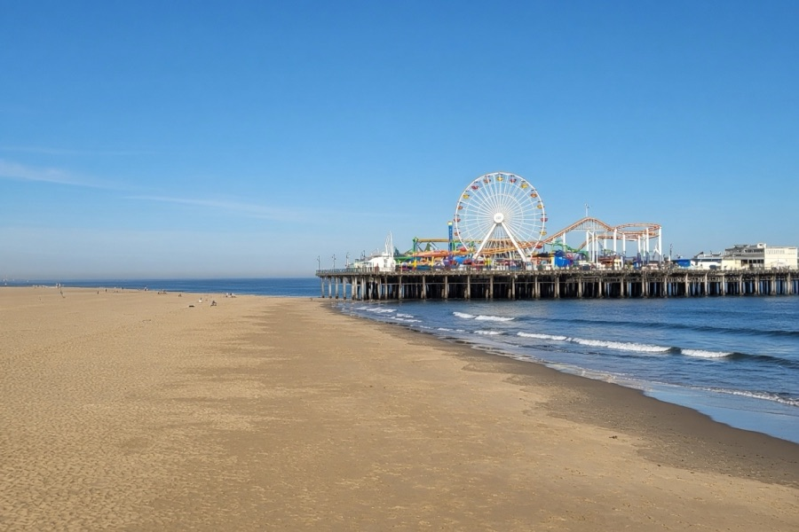

They were sitting in your library.
Three days in October, five photos, buried between hundreds of screenshots, receipts and memes. You rarely scroll back that far.
An app that puts photos back on the map
Pick photos with locations. Trace puts them on a map in the order you took them and replays the trip.
iPhone & iPad · No account · Photos never leave your phone


Three days in October, five photos, buried between hundreds of screenshots, receipts and memes. You rarely scroll back that far.
Photos with location data record when and where they were taken. Trace uses that information to order your photos and place them on the map.
Golden Gate Bridge→Lombard Street→Bixby Creek Bridge→McWay Falls→Santa Monica Pier
Three days down the Pacific coast, from the bay to the pier.
Days, distance and the places you passed, gathered for you and kept in the app. Open it again whenever the trip comes back to mind.
Then press play
Photos light up in the order you took them while the map moves with you. Live Photos move and videos play in full. These are real recordings from the app.
Details you will reach for
Not ready to grant photo access? A built-in trip plays right away. It never reads your library or lands in your history.
Live Photos come alive and videos play in full. By the end, the trip is a short film.
Photo without a location? Search or drag a pin, and optionally write the place back into the photo.
Turn on recording and the whole replay, original sound included, becomes a video to save or share.
Your home map keeps every voyage. Open any saved trip to replay it.
Satellite 3D on a big screen feels like flipping through a travel album that moves.
Maps and place names come from Apple’s system services. Everything else is calculated on the device. Read the privacy policy